💻Desarrollador Web Front-End💻| 🎮Desarrollador de Videojuegos💾 | ⌨Tecnico en computacion👩💻
Al pulsar una imagen se vera en pantalla completa
Acerca de mí
Tengo 20 años, me encanta la programacion ya
sea de videojuegos o web, podria pasarme hora tras
hora programando, siempre dispuesto a aprender y perfeccionarme
en este rubro, riendome de mi mismo al no poder encontrar
un error y que este resultara no ser tan complicado. Ademas
soy un estudiante universitario que asiste a una de las universidades
mas importantes del pais tanto por el nivel de la educacion como por el
valor historico de la misma.
En cuanto a la experiencia
tengo dos años de experiencia
desarrollando varias webs de gestión
para utilizarse de manera local, un año
y medio de experiencia desarrollando
videojuegos con Unity usando C#
orientado a objetos y 4 meses de
experiencia en armado y reparación
debido a una pasantía en la escuela
técnica.
Educacion
E.T.Nº 26 D.E 6 Confederacion Suiza
Escuela Tecnica Nº 26 D.E Nº6 de la cual me gradue con mi titulo de "Tecnico en computacion"
Año de ingreso: 2017
Año de egreso: 2022
Estado: Finalizado
Universidad Tecnologica Nacional
Universidad a la que asisto a dia de hoy
Año de ingreso: 2023
Año de egreso: Sin definir
Estado: En Progreso
Cursos Realizados
Desarrollo web 1 (2021)
Es un curso organizado por Aprender Programando del Gobierno de la Ciudad, donde se aprende a realizar el html y CSS de un ecomerce
Desarrollo de videojuegos con Unity (2022)
Otro curso que brinda Aprender programando es este, usando el motor Unity se aprende sobre como programar videojuegos usando C#
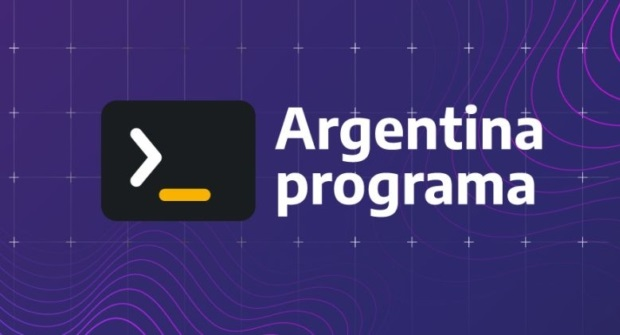
YoProgramo (2022)
Plan nacional, federal e inclusivo de formación en programación y software, es impulsado por el Ministerio de Economía de la Nación. Se aprende logica de programacion usando GobleStone, Javascript, y Ruby
Desarrollo web 2 (2022)
Retomo el desarrollo web, esta vez para ver mas en detalle Javascript, perfeccionando el ecomerce del nivel 1, realizando cambios con js, como un modo oscuro, creacion de elementos dinamicos con un formulario y otros
Desarrollo web con React JS (2023)
Participe de este curso donde a lo largo de las clases fuimos aprendiendo React JS desde 0, como proyecto final hicimos la siguiente Lista de Pendientes
Experiencia Laboral
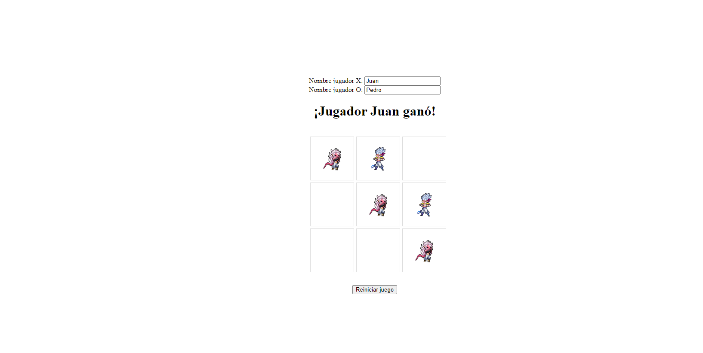
Desarrollo Web/ Apps en la escuela tecnica
Durante mi transcurso en la escuela llegue a programar en lenguajes como Python, C#, Java, JavaScript, y algunos otros.
En las imagenes podemos observar 2 chats Cliente - Servidor, uno desarrollado en Java, donde se inicia el servidor con una
direccion IP local con un puerto en particular al cual se conecta el Cliente e interactuan hasta que pulsen los comandos para salir.
En el chat desarrollado con Python se inicia un servidor, pero este no interactua sino que varios "Clientes" se conectan a el e
interactuan entre si.
Y otras 2 paguinas donde en una se puede jugar al tipico TaTeTi, en la ultima y mas reciente una paguina en la que se pueden armar imagenes
del tipo que cada uno quiera, poner una frase o algo para comunicar y una firma o remate en la parte inferior, aparte de un panel de control en
la cual se configura la "Imagen" a gusto.
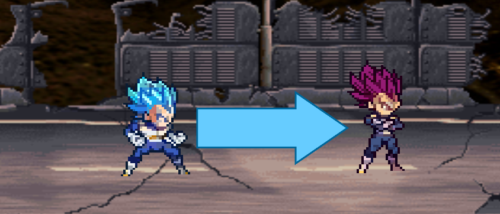
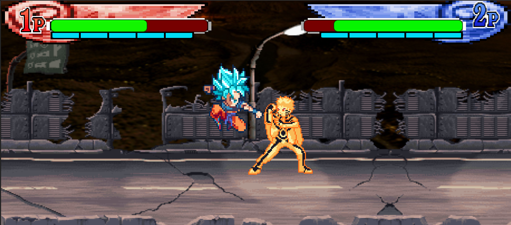
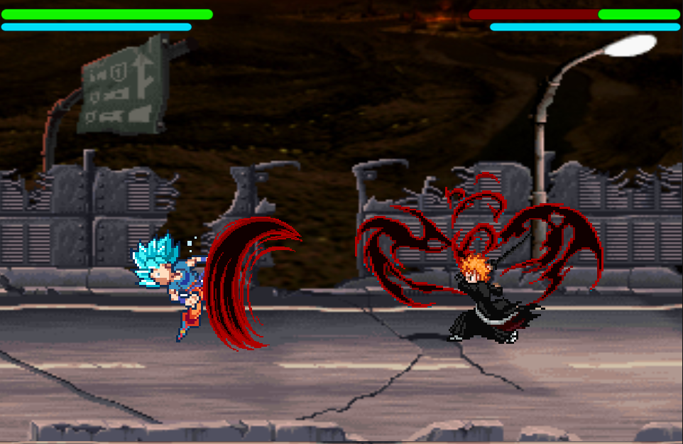
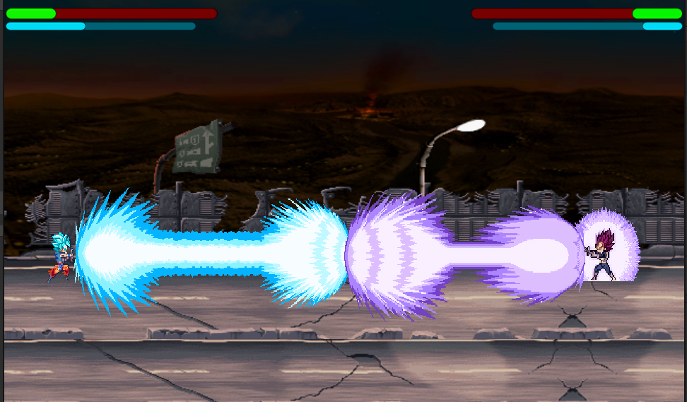
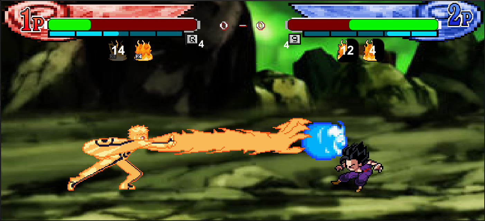
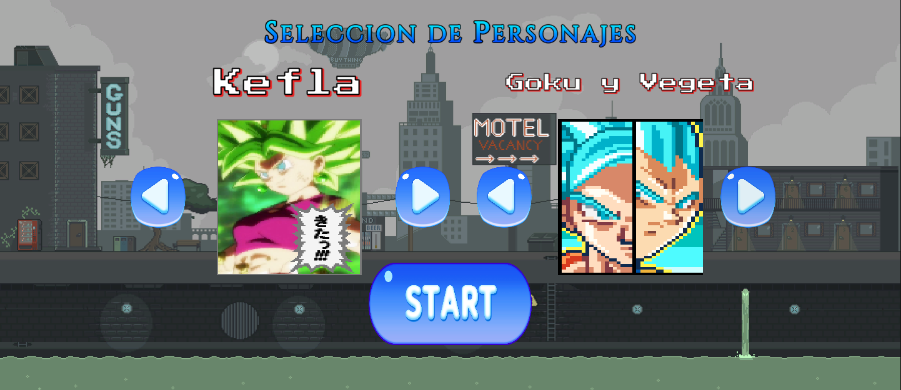
Desarrollo de Videojuegos
Enero 2023 - Actualidad
Emprendí un proyecto de desarrollo de videojuegos de peleas de personajes de la cultura pop de los últimos años, basado en
un estilo retro de 32 bits, utilizando C# Unity y programación orientada a objetos.
Este juego busca ser una recopilación de la historia de Dragon Ball en general, desde inicios
Z a la actualidad, pero no solo eso, sino que también se busca contar historias alternas ya
sean creadas por fans como "Multiverse" y "New Hope", por decir algunos de muchos, o historias alternas basados en otros elementos lógicos
de la serie.
El juego actualmente avanza lento pero seguro, debido a mi ingreso
en la universidad, eso no me detiene en mi objetivo, voy escribiendo como serian
los códigos a implementar en el juego en un cuaderno, para cuando tenga un poco de
tiempo pasarlos al juego y crear nuevas mecánicas.
Recordemos bien la forma y la cantidad de enemigos, ya que no es probable que se repitan.
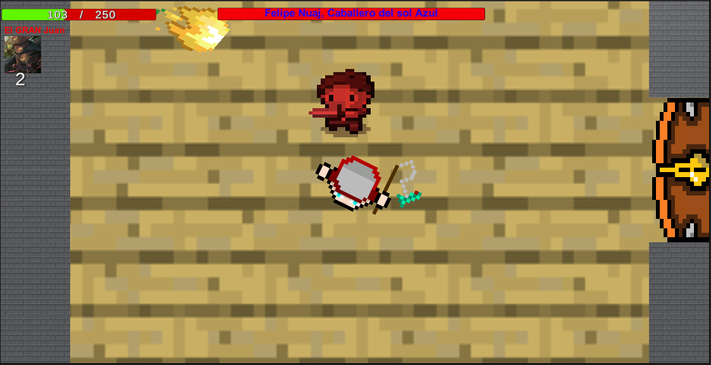
Ejemplo de enemigo
Diseñe una "IA" para que siga al jugador y ataque.
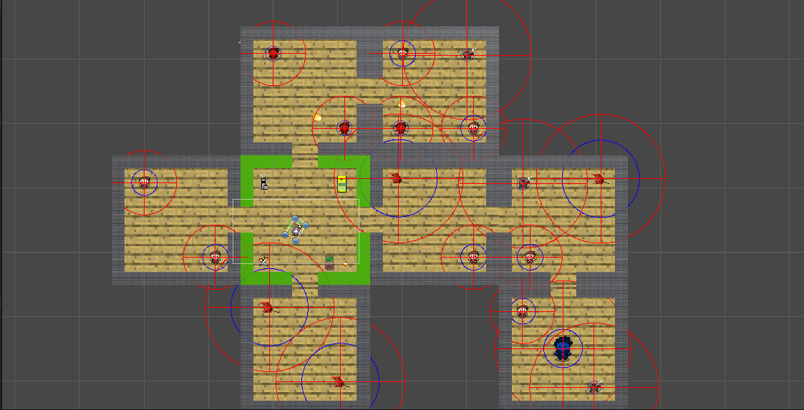
Segundo ejemplo de generación aleatoria
La disposicion de las salas y enemigos cambio😲.
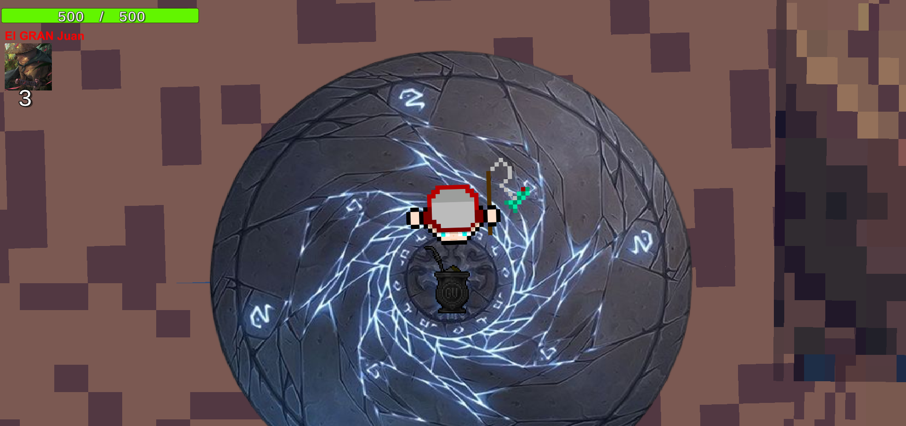
Modo Arcade
Un clasico de epocas pasadas, resiste y sobrevive.
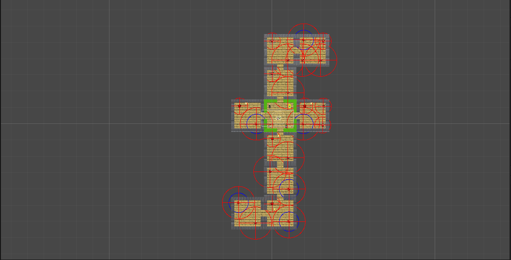
Tercer ejemplo de generación aleatoria
Salas perfectamente conectadas entre si, jamas se crea un laberinto igual al anterior.
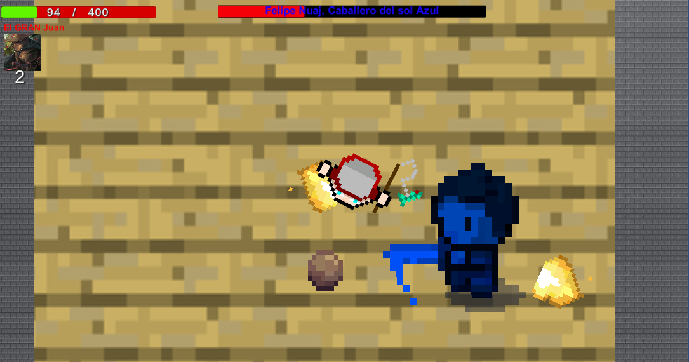
Jefes finales de cada nivel
En cada nivel hay un jefe final al que hay que derrotar para pasar de nivel.
Desarrollo de Videojuegos, Proyecto Final de carrera
Marzo 2022 – Diciembre 2022
Durante mi 6º año en la escuela tecnica, fui el programador principal
del equipo encargado del desarrollo de un videojuego, centrado en la
programación de un algoritmo que genere "laberintos"/ "mazmorras" en
un videojuego de generación aleatoria, dicho algoritmo no se limintaba
unicamente a las salas de los laberintos, sino que tambien afectaba a
los enemigo que podian aparecer o no, objetos que te ayudaban a superar los
niveles otorgandote diferentes efectos.
En las diferentes imagenes que se ven arriba, podemo ver diferentes tipos de
"laberintos" creados por el algoritmo, En la cuarta imagen podemos ver un escenario
especial que usamos para crear un modo arcade donde se jugara hasta que seas derrotado
o acabes con todos los enemigos, ademas de que en la segunda imagen podemos
ver uno de los enemigos en el juego, el cual sigue al jugador mientras una bola
de fuego lo orbita, en la ultima imagen podemos observar la pelea contra el jefe
del "nivel 1", el cual si pierde la mitad de su vida tiene una "segunda fase"
en la cual tambien lo orbitaran 2 bolas de fuego.
Ninguno de los integrantes del equipo era muy bueno en el diseño grafico asi que una vez
encontramos un diseño de enemigos que nos gustara lo reutilizamos para los jefes, ya que no
contabamos con el tiempo suficiente al estar cursando el ultimo año, cada uno tenia sus propias
pasantias y otros trabajos que entregar.
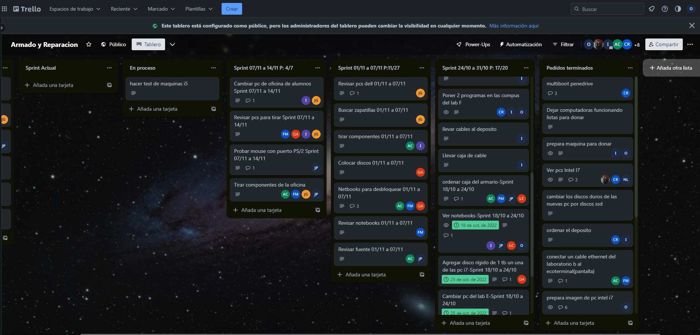
Servicio Tecnico en Pasantia
Septiembre 2022 – Diciembre 2022
Durante los ultimos meses de mi sexto año en la Escuela Tecnica
forme parte de una pasantia en la que me encargaba del mantenimiento de las computadoras, armarlas y
dejarlas listas para el uso de los demás estudiantes, instalacion de sistemas operativos usando un multiboot,
revision de computadoras y equipo almacenado en un deposito durante mucho tiempo, organizar el deposito, esto
lo llevamos a cabo organizando un Trello, donde se nos asignaban tareas con fechas limites que debiamos cumplir, la imagen
de presentación es una muestra del Trello organizado donde se ven mas en detalle las tareas desempeñadas.
Contacto
¡Me encantaría escucharte! Si estás interesado en contratar o tenes alguna pregunta, contáctame en octaviolf2016@gmail.com